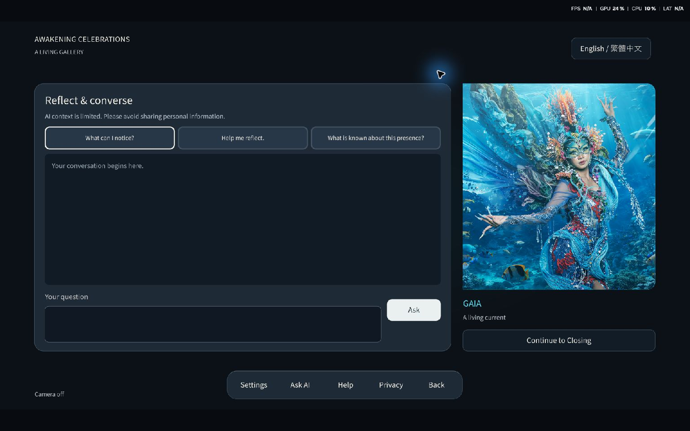
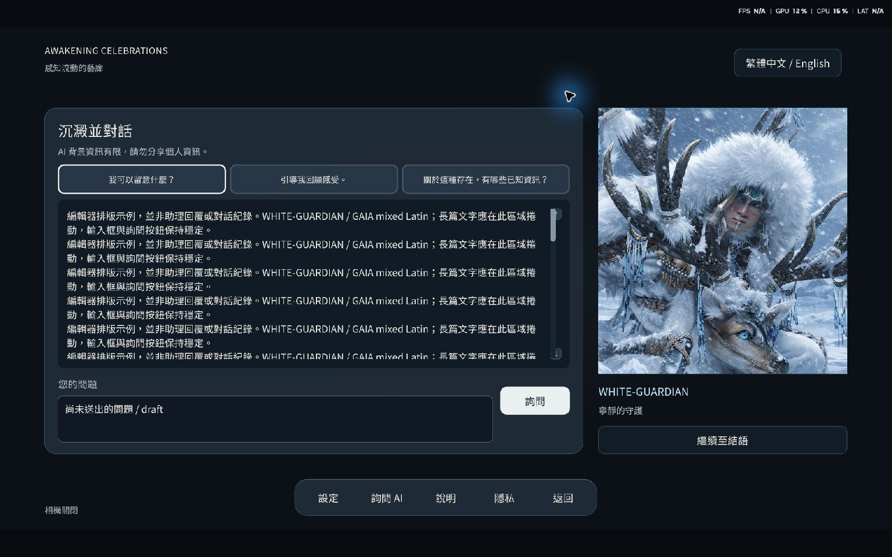
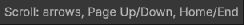
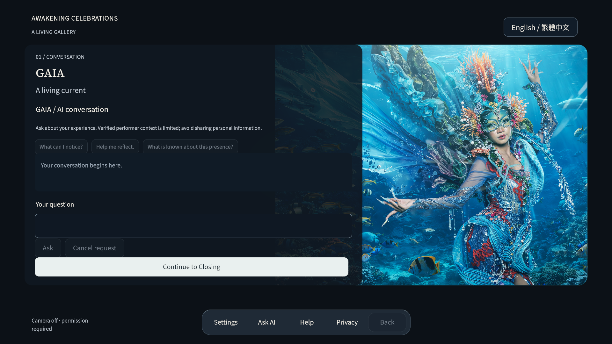
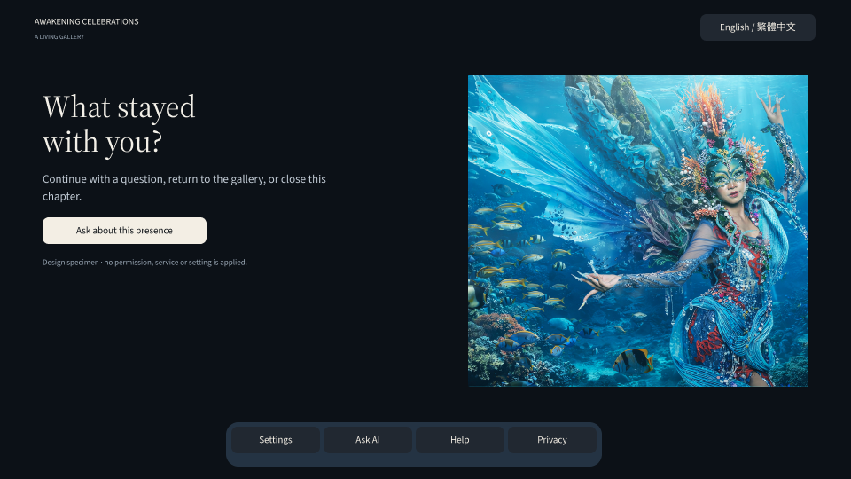

Isolated static Editor views — not Play Mode.1920×1080 logical composition on a1536×960 desktop capture. No application services or live requests. Long text and pending states are labelled layout specimens, not generated replies/history. System overlays do not measure application performance.
Changes, state coverage and remaining runtime checks · Measurements · Checks




